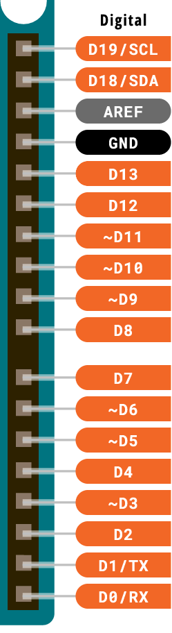
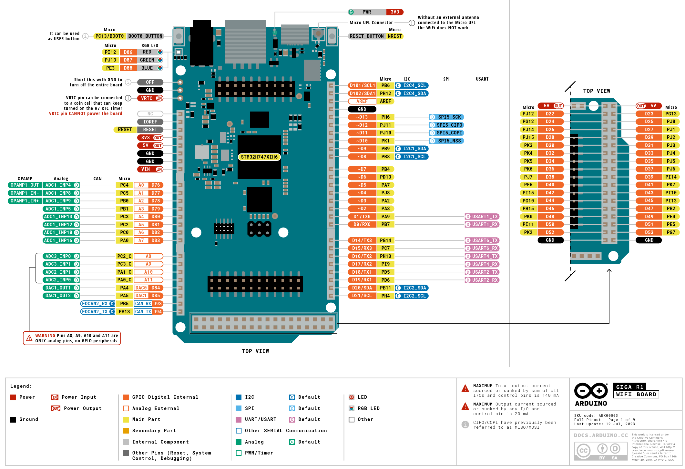
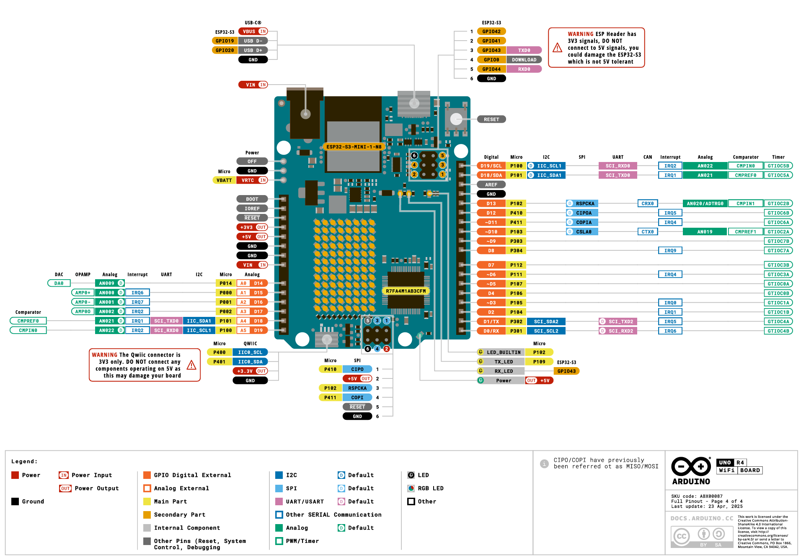
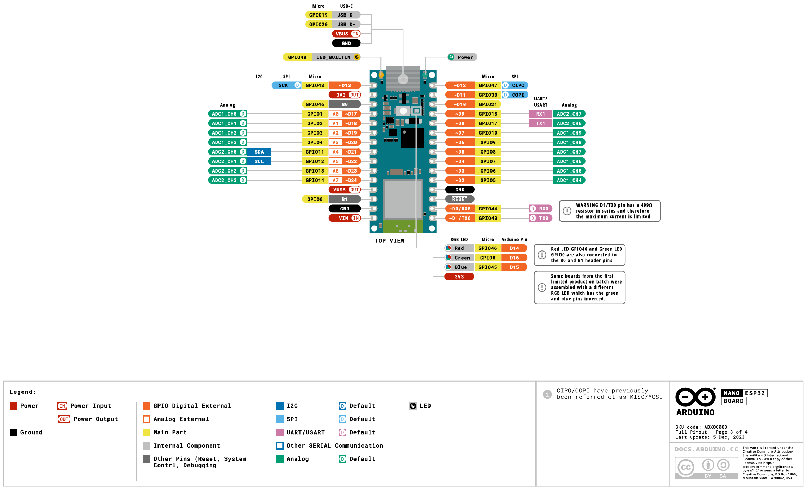

このLEDは明るさを可変抵抗器で調整できるモノクロLEDであり，複数の色のLEDがあるが，その1つ(赤色)が Grove - 赤色LEDである．
ここで入力するのは，以下の3項目である．
このデバイスはLEDの明るさの制御にPWM機能を利用するため，Arduino側もPWM機能に対応した端子に接続する必要がある．
下図はUno R4のデジタル端子のpinoutです．デジタル端子2番(D2)と3番(D3)を比較すると，3番は「～D3」と記載されている．このように，「～」が端子名(D+数字)の前についている端子はPWM機能に対応している．



